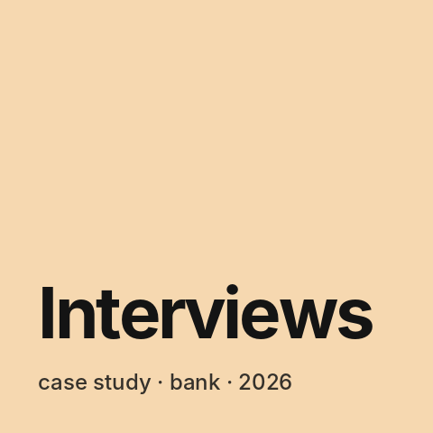
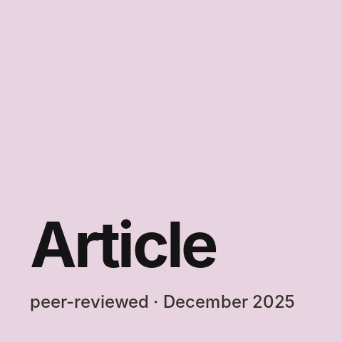
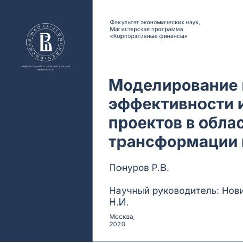

All tags
#fintech
4 posts · 1 case
-

What holds AI back in management — findings from interviews at a large bank For the empirical part of my PhD I ran a series of semi-structured interviews inside a large Russian bank. The question is simple: how does AI actually get built into a company's management system — and what gets in the way? Below are generalised findings, without the bank's name, people's names or internal figures. - Talk on how a bank can reduce AI risks — from accountability to a roadmap On 7 September 2026 — a talk at the CX International Scientific and Practical Conference "Current Issues in Economics and Modern Management" (Novosibirsk): "Organisational and managerial mechanisms for reducing the risks of AI in bank management".
-

Article on the risks and limits of AI in management — the case of banks My third peer-reviewed article was published — "Risks and limitations of using artificial intelligence in company management" in "Economics and Management: Problems, Solutions" (2025, no. 10). It's the topic closest to my job: I build a service with an AI agent at a bank. -

My HSE master's thesis — how to tell whether digital transformation will pay off My master's thesis in the Corporate Finance programme at HSE University's Faculty of Economic Sciences was "Modelling and evaluating the efficiency of a company's digital transformation investment projects". It started the research line I now continue in my PhD at RANEPA — this time about AI.